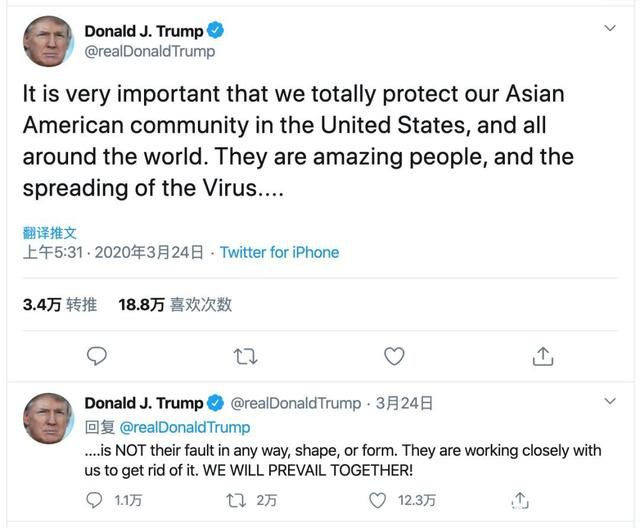

数说疫情0325：热干面醒了，特朗普慌了，英国也不佛系了
原文链接 备份链接 湖北有序解封。美国已成全球新冠肺炎疫情“震中”，经济刺激方案已经通过国会。英国急购350万个检测盒加紧备战。 文/《财经》数据研究员徐进 图/《财经》视觉中心 编辑/郝洲 一、湖北除武汉外全部解封 图1 今日国内简 …

世卫组织和国际社会明确反对将病毒与特定国家和地区相联系，反对搞污名化

《财经》综合报道 编辑 | 谢丽容
美国当地时间3月24日，美国总统特朗普在接受美国福克斯电视台（FOX）采访时表示，他决定不再公开使用“中国病毒”这一说法。特朗普表示：“我决定不再用这一点大做文章了”（I decided we shouldn’t make any more of a big deal out of it）。此前，特朗普曾在多个场合和社交媒体上故意用“中国病毒”的说法，在美国国内、中国及全球遭到普遍批评。

美国有线电视新闻网（CNN）在3月24日的报道中指出，在与医学专家进行磋商以及获得世界卫生组织的指导后，CNN认为该名称不准确，是一种污名化。
同样在3月24日的白宫记者会上，特朗普将“中国病毒”（Chinese Virus）的内容手动删掉了，并加入了一段有关“维护亚裔美国人”的段落。更早一天的3月23日，特朗普发推特呼吁保护亚裔群体，他表示新冠病毒不是亚裔美国公民的错，他们是很棒的人。这被美国媒体解读为特朗普因其不当言行受到压力。
中国外交部发言人耿爽在北京时间3月24日例行记者会上发言表示，中方已经多次重申，美方个别人处心积虑地将新冠病毒同中国相联系，不断地对中国搞污名化。中国人民对此强烈义愤、坚决反对。世卫组织和国际社会明确反对将病毒与特定国家和地区相联系，反对搞污名化。
耿爽引用联合国秘书长古特雷斯近期的发言表示，在与新冠肺炎大流行的斗争中，种族歧视和偏见行为是可耻的，必须始终与种族主义和歧视做斗争。欧盟外交与安全政策高级代表博雷利表示，病毒没有国籍，面对全人类共同挑战，应当选择合作与多边主义，而非竞争和相互指责，不应当随意诉诸“中国病毒”等说法。世卫组织认为，应避免将新冠病毒称为“中国病毒”，现在应是团结的时刻、尊重事实的时刻、共同抗击疫情的时刻。
近一时期，中美之间有一些关于病毒源头的争论。耿爽指出，挑起这场争论是美方，首先称病毒起源于中国，首先使用“中国病毒”和“武汉病毒”说法的也是美方。他呼吁，希望美方个别人能够倾听国际上和国内的理性声音，停止继续发表对中国进行污名化的错误言论。使用“中国病毒”和“武汉病毒”的说法无助于美国战胜疫情挑战，也无助于抗疫国际合作。美方的当务之急是集中精力做好自己的事情，与中方以及国际社会一道，为抗击疫情的国际合作做出有益贡献。
据环球网报道，美国纽约市市长白思豪（Bill de Blasio）3月24日在新闻发布会上表示，纽约市目前至少已出现新冠肺炎确诊病例14776例。考虑到当前疫情形势，该市300名囚犯即将被释放。
所有符合释放条件的人都是被判犯有轻罪和非暴力重罪的城市犯人，他们的刑期都只有不到一年。纽约警察局局长德莫特·谢伊（Dermot Shea）在新闻发布会上对释放囚犯的决定发表了评论。他说，这个决定非常困难，但他同意市长的意见，这个决定是基于现实和人道的考虑。
白思豪认为，4月纽约市就可能恢复正常的想法“绝对是不可思议的”。4月的情况“毫无疑问会比3月更糟”，他担心5月的情况可能比4月更糟。
美国约翰斯·霍普金斯大学24日发布的最新数据显示，截至美国东部时间24日13时30分（北京时间25日1时30分），全球新冠肺炎确诊病例超过40万例，达到407485例。全球死亡病例达18227例。其中，美国共报告新冠肺炎确诊病例53268例，死亡696例。较前一天上午7时，新增确诊病例达10054例，新增死亡病例163例。
白宫应对疫情小组成员比克斯（Birx）3月24日在发布会上表示，联邦政府对纽约地区的形势感到非常担忧，目前，美国56%的确诊病例、60%的新增病例都来自纽约都会地区。
中国以外，确诊病例过万的国家有意大利、美国、西班牙、德国、伊朗和法国。疫情已波及全球160多个国家和地区。

▲点击图片查看更多疫情报道
责编 | 阮璐阳 luyangruan@caijing.com.cn
本文为《财经》杂志原创文章，未经授权不得转载或建立镜像。如需转载，请在文末留言申请并获取授权。
原文链接 备份链接 湖北有序解封。美国已成全球新冠肺炎疫情“震中”，经济刺激方案已经通过国会。英国急购350万个检测盒加紧备战。 文/《财经》数据研究员徐进 图/《财经》视觉中心 编辑/郝洲 一、湖北除武汉外全部解封 图1 今日国内简 …
原文链接 备份链接 新冠病毒肺炎（COVID-19）不分国界。想要帮助全人类战胜这种疾病，美国和中国以及世界其它各国专家之间的密切合作必不可少。 哪类患者会转为危重症病人？哪些病人会幸存？区分他们的临床特征是什么？这些是美国各州医生最 …
原文链接 备份链接 美国的情况将会变得多糟糕？华盛顿州州长杰伊 · 伊斯利（Jay Inslee）在 3 月 10 日曾表示，仅仅在华盛顿州，两个月内感染人数就可能达到 6.4 万人。而该数据是目前全美公布确诊人数的 16 倍，根据美国约 …
原文链接 备份链接 当人类生存的主题被病毒、大流行病裹挟时，在白宫坐镇的特朗普、民间看好的疾病专家安东尼·福西和美联储主席鲍威尔纷纷出招，是老旧的套路还是定海神针，还未可知 文 |《财经》特派记者 金焱 发自华盛顿 编辑 | 苏琦 3 …
原文链接 备份链接 据美国《纽约时报》汇总各州公共卫生部门公布的新冠肺炎确诊病例，截至当地时间5日下午，全美已有163例确诊病例，分布在18个州。华盛顿州公共卫生部门5日公布了一例死亡病例，使得全美死亡病例达到了12例。 数据显示，美国 …